FOR 株式会社TUBAKI 様
お知らせ・ブログ・施工実績の
書き方
ホームページの更新は、パソコンかスマホのブラウザから行います。書いて「公開」を押すと、トップページや一覧に自動で並びます。デザインを気にする必要はありません。
- 管理画面
- https://tubaki-exterior.com/wp-admin/
- ユーザー名
- 制作担当から別にお知らせします
- パスワード
- 最初にメールで届く案内から、ご自身で決めていただきます
01
ログインする
- ブラウザで tubaki-exterior.com/wp-admin/ を開きます。お気に入り（ブックマーク）に入れておくと便利です。
- ①にユーザー名、②にパスワードを入れます。
- ③の ログイン を押します。
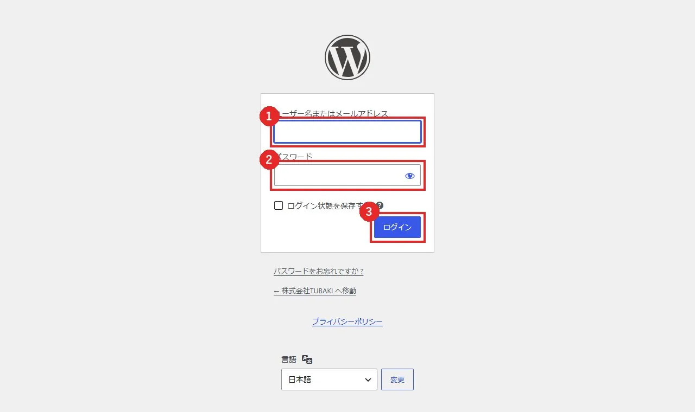
パスワードを忘れたときは、ログイン画面の下の「パスワードをお忘れですか？」から、登録のメールアドレスあてに作り直しのメールを送れます。
02
最初の画面
ログインすると「ダッシュボード」という画面が開きます。下のほうにある「ホームページの更新」の欄から、よく使う3つの作業にすぐ進めます。
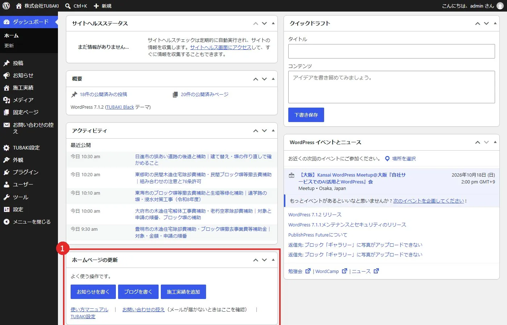
03
お知らせを書く
休業日のご案内や、キャンペーンのお知らせなどに使います。
- お知らせを書く を押します。
- ①の「タイトルを追加」にタイトルを入れます。
- ②に本文を書きます。Enter キーで段落が分かれます。
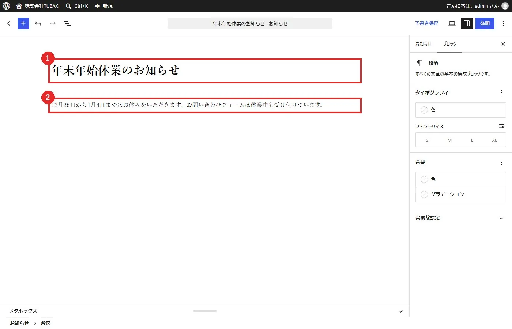
- 右側の「種類」で、①「お知らせ」「休業」などを選びます。
- 右上の②の 公開 を押し、出てきた確認の 公開 をもう一度押します。
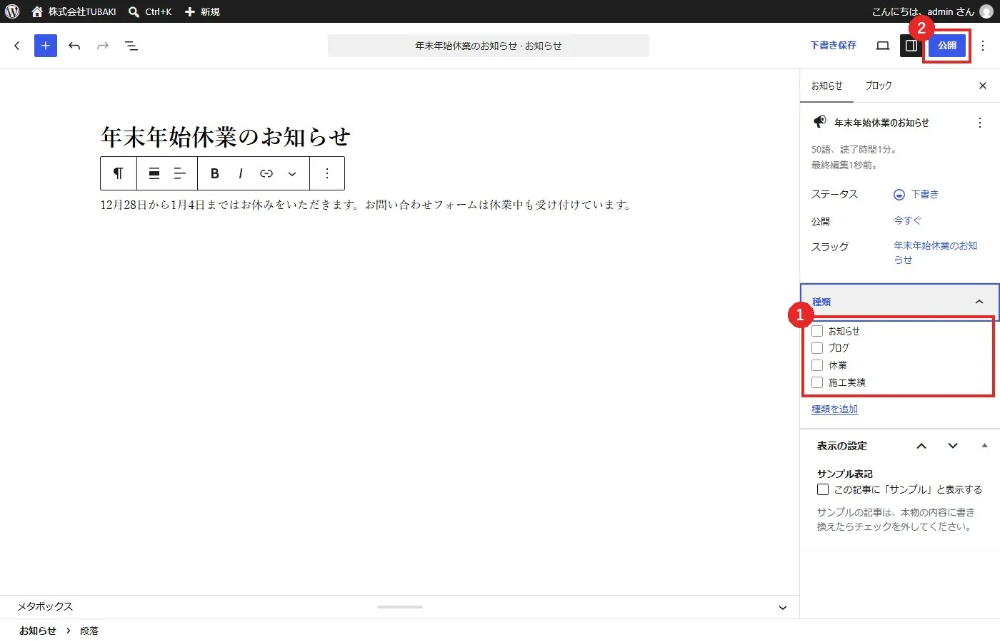
トップページの「お知らせ」には新しいものから3件が出ます。すべてのお知らせは tubaki-exterior.com/news/ で見られます。
04
ブログを書く
外構や解体について、お客様に役立つことを書く場所です。Google で見つけてもらうきっかけになるので、月に1〜2本を目安に続けるのがおすすめです。お客様からよく聞かれることが、いちばん良いテーマです。
- ブログを書く を押します。
- ①にタイトルを入れ、その下に本文を書きます。
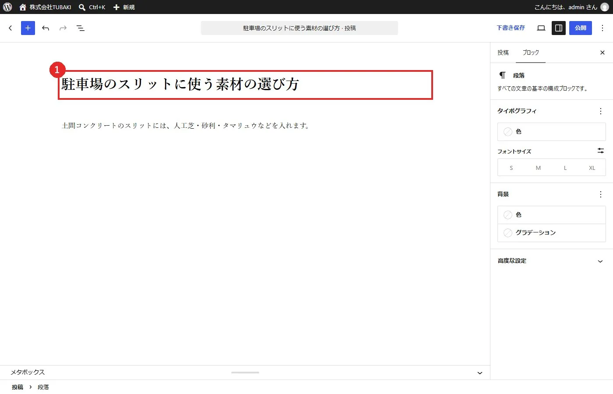
見出しの入れ方：行の頭で「/見出し」と打つか、左上の「＋」から「見出し」を選びます。見出しを2つ以上入れると、記事の最初に目次が自動でできます。
写真の入れ方：行の頭で「/画像」と打つか、「＋」から「画像」を選んで写真を選びます。
- 右側の「投稿」タブを開きます。
- ①の「カテゴリー」で、外構 か 解体 にチェックを入れます。トップページの「ブログ｜外構」「ブログ｜解体」に出ます。
- ②の アイキャッチ画像を設定 で、一覧やトップに出る写真を選びます。
- ③の 抜粋を追加 に、一覧に出る短い説明（80〜120文字くらい）を書きます。Google の検索結果の説明にも使われます。
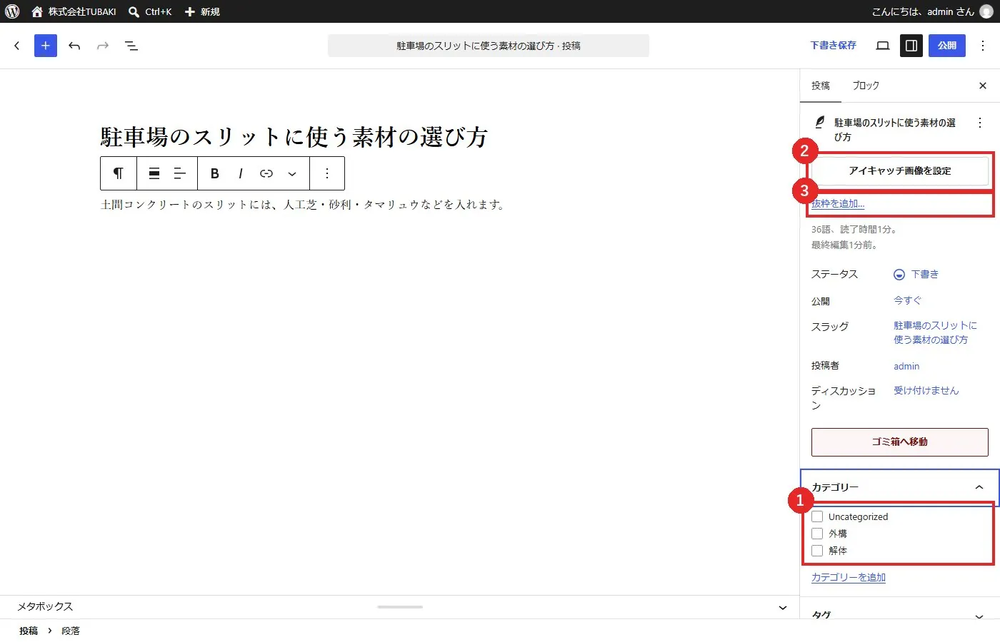
- 右側の下のほうの「表示の設定」は、ふだんは何も触らなくて大丈夫です。写真が実際の施工写真でないときだけ、「アイキャッチ画像の注記」に「写真はイメージです」と書きます。
- 右上の 公開 を押し、確認の 公開 をもう一度押します。
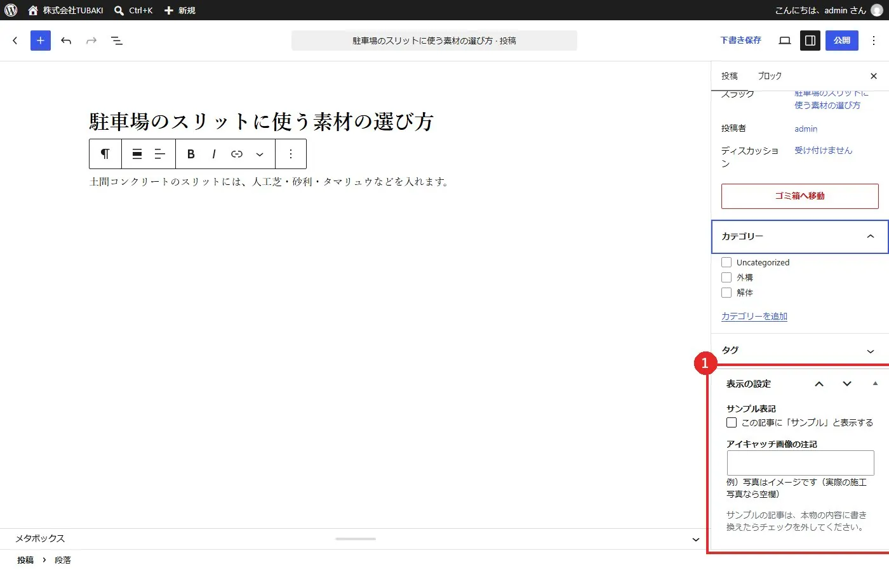
05
施工実績を追加する
工事が終わったら、写真と内容を載せましょう。実際の施工写真は、ホームページでいちばん信頼につながる情報です。
お客様のお宅の写真を載せるときは、必ず施主様の許可をいただいてください。表札・車のナンバー・人の顔は、写らないように撮るか、隠してから載せます。
- 施工実績を追加 を押します。
- ①にタイトル（例：2台用カーポートと土間コンクリート）を入れます。
- 本文に工事の説明を書きます。写真は②の メディアを追加 から入れます。複数の写真を選んで「ギャラリーを作成」にすると、並べて表示できます。
- ③の メインの写真を選ぶ で、一覧とトップに出る写真を選びます。
- ④の「サンプル表記」にはチェックを入れません。
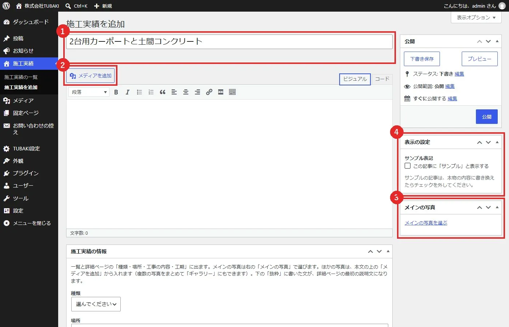
- 下にスクロールして、①の「施工実績の情報」に、種類・場所・工事の内容（1行に1つ）・工期を入れます。場所は「名古屋市緑区」のように、番地までは書きません。
- ②の「抜粋」に、詳細ページの最初に出る説明を書きます。
- 右上の 公開 を押します。
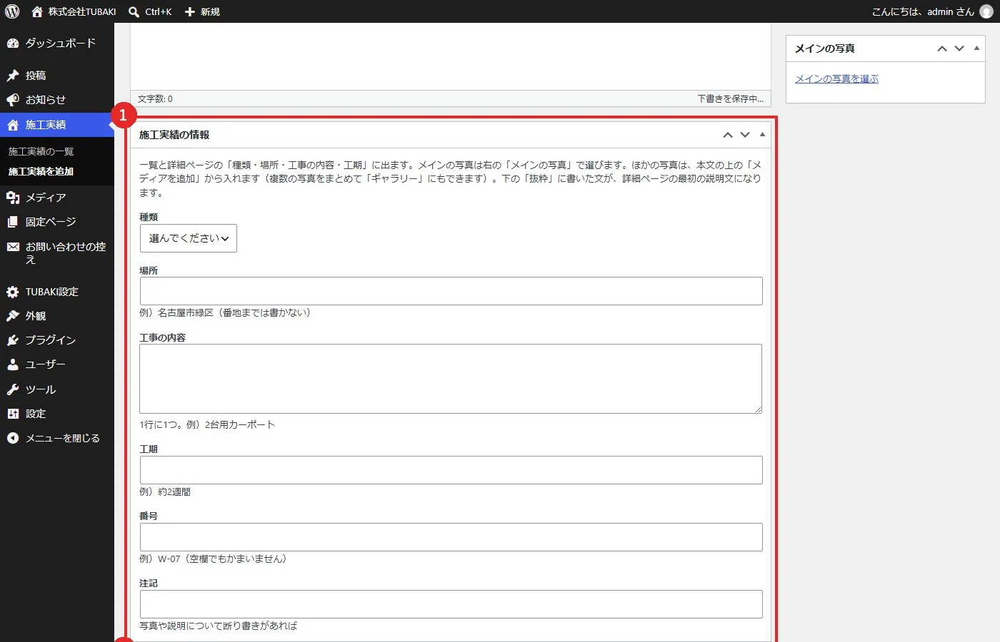
「場所」に地域名（例：天白区、豊明市）を入れておくと、その地域のページにも施工例として自動で並びます。
06
書いたものを直す・消す
- 左のメニューの お知らせ・投稿（ブログ）・施工実績 のどれかを開きます。
- 直すとき：①のタイトルを押すと編集画面が開きます。直したら右上の 更新 を押します。
- 消すとき：タイトルにマウスを乗せると下に出る②の ゴミ箱へ移動 を押します。
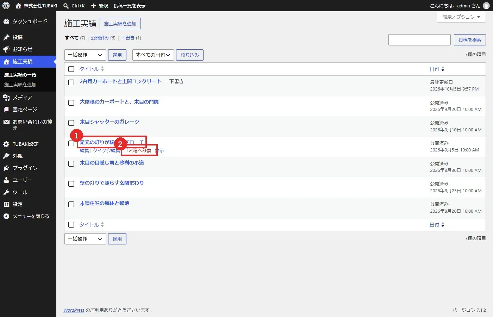
間違えて消したときは、一覧の上の「ゴミ箱」から 復元 で戻せます。戻したものは「下書き」になるので、編集画面を開いて 公開 を押し直してください。
07
会社の情報を変える
電話番号・住所・営業時間・定休日などは、左のメニューの①の TUBAKI設定 で変えられます。ここを変えると、ヘッダー・フッター・会社概要・お問い合わせページなど、すべてのページの表示が一度に変わります。
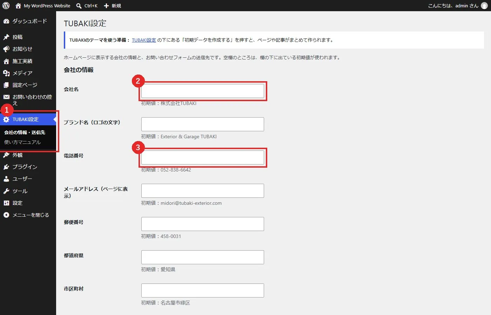
- 変えたい欄に新しい内容を入れます。
- いちばん下の 保存する を押します。画面の上に「保存しました。」と出れば完了です。
「お問い合わせが届くアドレス」を変えるときは、そのアドレスで実際にメールを受け取れるか確かめてから変えてください。間違えると、ホームページからのお問い合わせが届かなくなります。
08
お問い合わせの控えを見る
ホームページのお問い合わせフォームから届いた内容は、メールで届くほか、管理画面にも控えが残ります。メールが見当たらないときは、ここを確認してください。
- 左のメニューの①の お問い合わせの控え を押します。
- ②の受付日時とお名前を押すと、内容が見られます。
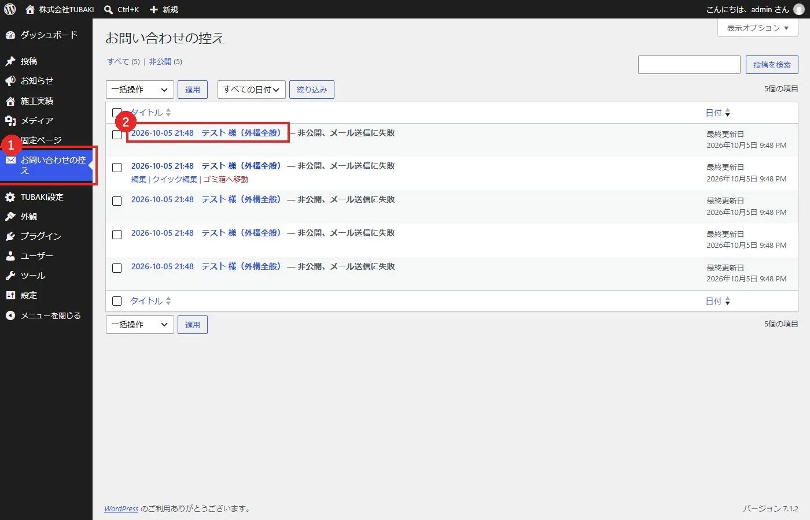
一覧に「メール送信に失敗」と出ているものは、メールが届いていないお問い合わせです。控えを見て、お客様にご連絡してください。何度も出るときは、制作担当にご連絡ください。
09
困ったとき
| 書いたのに表示が変わらない | ブラウザで再読み込みしてください。パソコンは Ctrl＋Shift＋R（Mac は ⌘＋Shift＋R）、スマホは画面を下に引っぱって更新します。 |
|---|---|
| トップのブログ欄に出ない | カテゴリーの「外構」か「解体」にチェックが入っているか確かめてください。 |
| 写真が重い・大きい | スマホの写真はそのままで大丈夫です（自動で縮まります）。1枚10MBを超える写真は、縮めてから入れてください。 |
| 間違えて消した | 一覧の上の「ゴミ箱」から「復元」で戻せます。戻したものは「下書き」になるので、公開し直してください。 |
| ログインできない | ログイン画面の「パスワードをお忘れですか？」から作り直せます。それでも入れないときは、制作担当にご連絡ください。 |
| 「更新」のお知らせが出た | WordPress 本体は自動で更新される設定です。ご自身で操作しなくて大丈夫です。 |
| デザインやページの構成を変えたい | 制作担当にご相談ください。 |